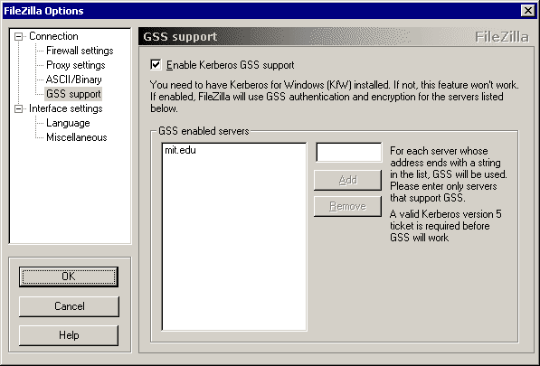

GSS Support
Overview:
FileZilla is able to communicate with FTP servers using Kerberos with GSS. When this is enabled, all data sent between FileZilla and the FTP server will be encrypted. This means that other people on the network cannot steal your password or your data.
In order to use this feature, you must make sure:
the FTP server supports GSS and Kerberos
you have Kerberos for Windows installed on your computer
you have obtained Kerberos 5 tickets
If these conditions are not met, FileZilla will give you the option of sending all your data in the clear. Do not do this if your password or your data must be kept secret!

Enabling GSS:
Check the Enable Kerberos GSS support box to enable Kerberos GSS.
GSS Enabled Servers:
Because most FTP servers do not support GSS, FileZilla does not by default use it during its logon process. If you wish FileZilla to use GSS when it connects to a server or a set of servers, you must enter them in the box labeled GSS enabled servers. You may enter either the full name of the servers or their domain name. When you try to connect to a server, FileZilla will compare the full name of the server against the list of names in this box. If the server's name ends with a string in the list, then GSS will be used.
For example, if the list consists of "mit.edu", then FileZilla will use GSS when it connects to mint-square.mit.edu or athena.dialup.mit.edu, but it won't use GSS when it connects to ftp.microsoft.com.
If the list consists of "mint-square.mit.edu", then FileZilla will use GSS only when it connects to mint-square.mit.edu.
To add a server to the list, enter its name in the small text box, and click Add.
To remove a server from the list, click its name in the list box, and click Remove.
FileZilla also supports aliases. FileZilla automatically resolves the alias and compares the real name of the server against the list. For example if athena.dialup is an alias for athena.dialup.mit.edu, and you connect to athena.dialup, FileZilla retrieves the real address, in this case athena.dialup.mit.edu and compares it against the list.